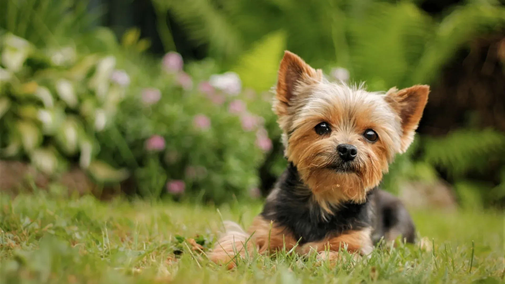
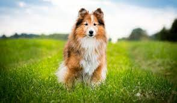

| Nome | Descrição | Contato | Website |
|---|---|---|---|
| Associação Quatro Patinhas | Resgate e adoção de cães e gatos | (31) 3357-1709 | https://www.quatropatinhas.com.br/ |
| ONG Patas Therapeutas | Terapia assistida por animais | (31) 98880-9000 | http://patastherapeutas.org/ |
| ONG Coração Animal | Resgate, tratamento e adoção de animais abandonados | (31) 3492-3483 | https://www.instagram.com/atpa.coracaoanimal/ |
| GAAAL - Grupo de Apoio aos Animais de Rua e de Lar Temporário | Proteção animal e resgate de animais em situação de risco | (31) 99792-1224 | https://www.instagram.com/gaaal.adocao/ |
| Grupo Entre Pegadas | Adoção de animais resgatados e conscientização sobre a causa animal | (31) 98433-1013 | https://www.instagram.com/entrepegadas/ |
| Associação Mineira de Defesa do Ambiente (AMDA) | Defesa e proteção do ambiente | (31) 3223-7416 | https://www.amda.org.br/ |
| ONG Patinhas Carentes | Resgate, tratamento e adoção de animais abandonados | (31) 99126-8939 | https://www.patinhascarentes.org/ |